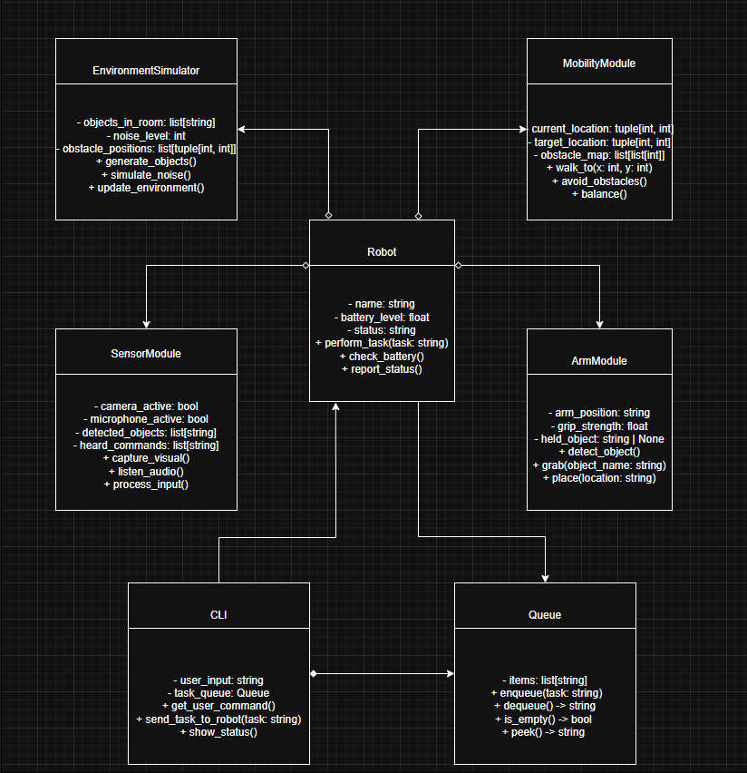
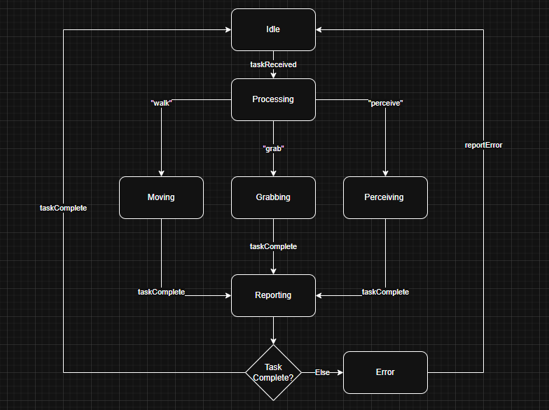
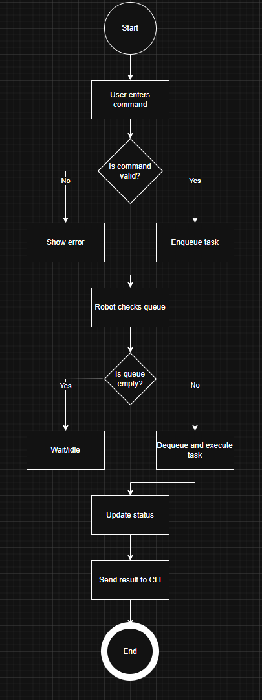
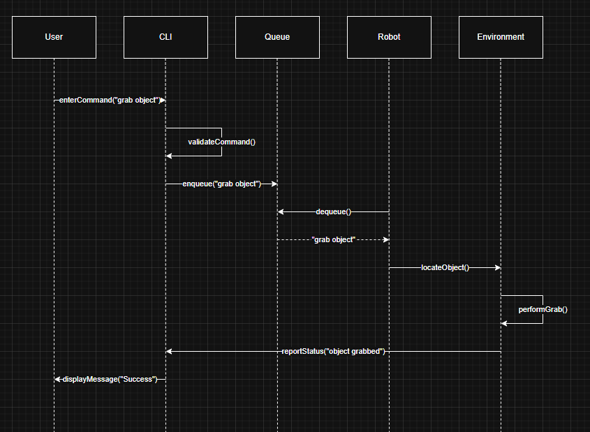
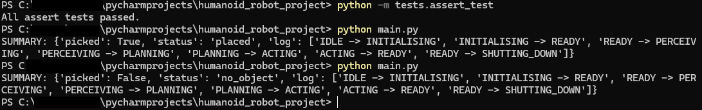

The application of Object-Oriented Programming (OOP) requires both a deep understanding of its fundamentals as well as knowledge of the best methods for implementation. Unified Modelling Language (UML) diagrams and models provide an essential foundation for visualising and planning object-oriented systems. This reflective analysis evaluates the UML diagrams produced during the system design phase for a humanoid robot, and then assesses the implementation into a working Python system. There is an analysis of the role of the class, activity, sequence and state transition diagrams in shaping the system as well as the broader learning outcomes achieved. Finally, the analysis addresses the professional and personal impact of this development process.
The first key artefact was the class diagram, which provided an abstraction of the robot’s structure and behaviour. It mapped core entities such as the controller, sensors and actuators as well as their attributes and operations. The diagram established clear relationships, which is helpful for supporting modular implementation in Python. For example, the “RobotController” was designed to manage states and behaviours, while sensor and actuator classes were modelled as separate components. This assisted with clean encapsulation and reusability. Below is a screenshot of it:
The state transition diagram was essential for defining the robot’s cycle between various states. It outlined permissible transitions between states such as “IDLE”, “INITIALIZING”, “READY”, “PERCEIVING”, “PLANNING”, “ACTING” and “SHUTTING_DOWN”. This diagram guided the implementation of the finite state machine within the system, ensuring that transitions followed logical rules and prevented invalid operations. The value of this artefact became particularly apparent when handling error conditions, safeguarding the system against wrong operations and assisting the system with being able to test itself properly. Below is a screenshot of it:
The activity diagram focused on the “perceive–plan–act” loop, this diagram represented the flow of information through the system, from sensor input to planning and then completing actions via actuators. In the finished system, it became the “perceive_plan_act()” function. The clarity of this diagram was beneficial for development, its simple loop allowed for straightforward coding. Below is a screenshot of it:
The sequence diagram illustrated the order in which components communicated during tasks such as picking up objects and placing them elsewhere. This diagram contributed towards the “pick_and_place()” function. The diagram demonstrated how the user, sensors and actuators interact, and this was implemented well into the finished system. Below is a screenshot of it:
The system implementation demonstrated consistency between the UML artefacts and the Python implementation. The state machine enforced by the controller accurately mirrored the state transition diagram, while the “perceive–plan–act” loop aligned with the activity diagram. The simple architecture also reflected the class diagram’s original structure, demonstrating a successful transfer from design to finished system. Below is a screenshot of the results that would appear upon testing the system using the terminal:
A key strength of the finished system was its modularity and clarity. The encapsulation of sensors and actuators into dictionaries allowed for clean interactions within the controller. Another strength was the logging of state transitions, which provided traceability and was helpful for testing.
Several challenges emerged throughout the implementation stage, including issues regarding import paths and package organisation. Initial imports produced errors in the IDE, requiring configuration to run from the project root. Another challenge was introduced by the randomised behaviour of sensors, which produced different outputs every time the program was run which affected the reproducibility of results. While this simulated environmental uncertainty effectively, it also complicated test predictability.
Comparing weeks seven and eleven, the design provided a strong foundation in the early stage, while the implementation phase revealed complexities that diagrams would not be able to predict or plan for. The state machine was straightforward in theory but required careful use of exceptions and error cases in practice. Similarly, the activity and sequence diagrams planned flows accurately, but coding required the addition of logging, error handling and a simulation of real-world behaviour.
Overall, the system implementation achieved its objectives in that it became a functioning humanoid robot system, aligned with UML design and validated by automated testing.
The learning outcomes were achieved throughout various stages of the system implementation. In regards to OOP principles, encapsulation was evident through the modular design of sensors and actuators, abstraction was achieved through the controller interface and the state machine used the principles of clear state management. Polymorphism was also somewhat supported through the consistent interfaces of sensors and actuators.
The project applied data structures effectively. Dictionaries were used to manage collections of sensors and actuators, offering flexibility. The transition log, stored as a list, provided tracking of state changes. These structures allowed for simplicity as well as efficiency, supporting both the execution of commands and later evaluation.
In relation to algorithms, the planning function implemented a simple but effective decision-making system. It analysed sensor data to determine whether the robot should remain idle, recover balance or attempt to pick up an object. While not complex in a computational sense, this algorithm reflected the decision-making flow in the activity diagram as well as a demonstration of an effective system built off of perceived data.
Testing was central to learning outcomes, through the use of “assert” statements to test the system with different variables as a simulation of real-time use. The tests confirmed legal transitions, rejected illegal ones and ensured that “perceive–plan–act” cycles returned the system to a “ready” state.
These outcomes achieved and built from the UML diagrams from week seven demonstrate that UML models support the design process particularly effectively, and a well planned diagram allows for a much easier system implementation.
This reflective analysis has showcased the value of UML diagrams in supporting the design and implementation of an object-oriented system. The class, state transition, activity and sequence diagrams collectively guided the structure, behaviour and interactions of the humanoid robot project. The evaluation was able to highlight strengths while also acknowledging challenges. The project achieved success in regards to the learning outcomes, namely reinforcing OOP principles, the application of data structures and testing practices. From a more professional standpoint, the development process strengthened confidence in regards to the use of structured design methods. Overall, the progress from the system design phase to the system implementation phase provided both a competent system as well as a significant learning experience.
While the code is original, various sources were used in the gathering of libraries and methods of coding:
w3Schools (2024). Python Tuples. [online] www.w3schools.com. Available at: https://www.w3schools.com/python/python_tuples.asp.
docs.python.org. (n.d.). enum — Support for enumerations — Python 3.10.1 documentation. [online] Available at: https://docs.python.org/3/library/enum.html.
GeeksforGeeks (2020). Python pass Statement. [online] GeeksforGeeks. Available at: https://www.geeksforgeeks.org/python/python-pass-statement/.
Python, R. (2025). Python’s assert: Debug and Test Your Code Like a Pro – Real Python. [online] realpython.com. Available at: https://realpython.com/python-assert-statement/.
Python documentation. (2025). Futures. [online] Available at: https://docs.python.org/3/library/asyncio-future.html.
Python Software Foundation (2019). typing — Support for type hints — Python 3.8.1rc1 documentation. [online] Python.org. Available at: https://docs.python.org/3/library/typing.html.